I design the power hardware that keeps spacecraft alive — triple-junction GaAs arrays, power conditioning and distribution units, and CubeSat electrical power systems, taken from first-principles calculation to fabricated, bench-validated flight boards.
My specialisation sits precisely where space photovoltaics meets power conversion — the same ground SOLLAB Co., Ltd. is building on. I have already delivered flight-oriented hardware into that programme.
Compound-cell solar arrays
Designed a 184-cell, 222.8 W five-panel array on AZUR SPACE 3G30A triple-junction GaAs cells — the same III-V compound technology at the core of SOLLAB's space solar work — with GSFC-STD-7000 grounding, bonding and ESD compliance.
Power conditioning & MPPT
Built the companion 5-channel UMPPT PCDU delivering 212.6 W on a 28 V unified bus, plus a 300 W terrestrial MPPT charge controller — bridging satellite power systems and inverter-class hardware.
Full CubeSat heritage
Architected, fabricated and bench-validated a complete 1U CubeSat — EPS, OBC, radio, antenna and payload — with N-1 redundancy raising reliability to R = 0.991, published as first-author IEEE research.
ABOUT
Hardware, end to end
BENZIR AHAMMED Dhaka, Bangladesh
I'm a hardware engineer with a BSc in Aeronautical Engineering (Avionics) from Aviation & Aerospace University Bangladesh. My work lives where power electronics meets spaceflight: solar arrays, power conditioning and distribution units, CubeSat electrical power systems and MPPT converters — carried from architecture and analytical sizing through schematic, multi-layer PCB layout, fabrication and bench validation.
I currently lead battery, BMS and motor-controller R&D at Palki Motors, Bangladesh's first indigenous electric vehicle programme, while designing satellite power hardware for international clients — including an ongoing engagement with SOLLAB Co., Ltd. (South Korea).
I'm first author of three IEEE publications on CubeSat power architecture and low-power satellite communication, and my thesis CubeSat received the Best Thesis Award. I've led electrical teams to 16th of 40 at the AAS International CanSat Competition in the United States and 8th of 27 at the Anatolian Rover Challenge in Turkey.
I'm now looking to build a long-term engineering career in Korea's space industry — and I've begun studying Korean toward that move.
222.8 WLargest spacecraft array designed — 184 cells
A five-panel, 184-cell spacecraft solar array built on AZUR SPACE 3G30A triple-junction GaAs cells — sized, strung and routed for a 2-week LEO direct-solar-feed mission, delivered with a full design and specification report.
Deployable panel — hinged, with sun sensor
Deployable panel — 2D layout with harness routing
Fixed panel — 48-cell 6S8P, 58.1 W
TECHNICAL HIGHLIGHTS
184 cells across five panels delivering 222.8 W BOL @ 28°C against a 212.6 W mission budget — +4.8% margin.
AZUR SPACE 3G30A triple-junction GaAs (29.3% efficiency, built-in bypass diodes); one fixed 6S8P panel plus four deployables (6S6P / 4S8P), every string self-contained and under 20 V for PCDU MPPT compatibility.
GSFC-STD-7000 compliance engineered in — redundant grounding via bleed resistors (4.3.1.3), bonding ≤100 Ω (4.3.1.4) and all surfaces >10 cm² grounded <1 MΩ for ESD (4.3.1.5).
CSS-10 sun sensor integration for attitude reference; hinged deployable mechanics with routed harness paths.
Outcome Delivered as a final design & specification report (v4) with complete string design, routing rules, grounding, bonding and ESD strategy — part of a continuing R&D engagement with SOLLAB's space solar programme.
PROJECT 02
SOLLAB Co., Ltd.
5-Channel UMPPT PCDU — 28 V Unified Bus, 212.6 W
SOLLAB Co., Ltd. — South Korea
Role: Hardware Design Engineer · Companion unit to the 222.8 W solar array · GSFC-STD-7000 derated
A Power Conditioning and Distribution Unit for a 2-week LEO CubeSat mission — five independent MPPT channels combined onto a regulated 28 V bus, with supercapacitor transient buffering and full protection, sensing and OBC telemetry.
PCDU board — annotated subsystem map
3D render — supercapacitor bank and 5-channel MPPT tiers
TECHNICAL HIGHLIGHTS
5-channel UMPPT topology — one LT8490 synchronous buck-boost MPPT controller per solar panel, combined via Schottky isolation diodes onto a 28 V unified bus; distributes 212.6 W across 3.3 V, 5 V and 28 V rails (11 payload channels).
Supercapacitor buffer (2x BCAP0350, 175 F / 5 V) with charge manager and auto-switchover for pulsed-load support on the 5 V rail — no battery, direct solar feed.
Per-channel two-stage EMI filtering with TVS clamping (SMBJ series, 3x V_oc derating) and INA181A1 high-side voltage/current sensing into an ADS7953 ADC array for closed-loop P&O MPPT.
Layered protection — three circuit breakers, opto isolation switch for overcurrent action, isolation diodes, fuel gauge and dual NTC thermal monitoring, all telemetered to the OBC.
All COTS power ICs derated per NASA GSFC-STD-7000; SMD packaging validated against Falcon 9 / Electron launch vibration profiles.
Outcome Delivered as a full design and analysis report with the annotated board and fabrication-ready layout — the power core of SOLLAB's CubeSat mission, feeding from the 184-cell array of Project 04.
A flight-ready Electrical Power System for a 1U CubeSat — distributed N-1 redundant architecture taken from reliability modelling through schematic, 96 x 96 mm PC-104 layout, assembly and a live telemetry dashboard.
Assembled EPS — 4-cell Li-ion pack with thermistors
3D render — deployment switches and solar inputs
Live bring-up with solar panels + Python telemetry dashboard over SPI/I2C
TECHNICAL HIGHLIGHTS
Distributed N-1 redundant architecture raising modelled reliability from R = 0.797 (conventional) to R = 0.991.
BQ24650 MPPT solar charging with CC-CV control holding SOC above 90% across simulated LEO orbits; converter efficiency sustained above 85% at typical loads.
Power path built on LTC3130 / TPS63020 regulators, LTC4376 / MAX40200 ideal diodes and LTC4362-2 eFuse circuit breakers for per-rail fault isolation.
16-channel telemetry — ADS8688 16-bit SPI ADC, BQ27441-G1 fuel gauge and ZXCT1086 current sensing across cells, solar strings and subsystem rails.
Validated in MATLAB/Simulink (500 km orbit, 35-minute eclipse) and on the bench with a live Python telemetry dashboard.
Outcome Basis of the first-author MEPCON 2025 paper on reliability-oriented distributed CubeSat EPS with N-1 redundancy and hybrid storage.
PROJECT 04
1U CubeSat OBC & Radio — Full-Stack Flight Avionics
A flight-ready On-Board Computer and UHF radio for a 1U CubeSat — full schematic design, component selection, multi-layer layout and EPS integration, taken through fabrication, assembly and live bench bring-up.
Assembled OBC & Radio board — PC-104 form factor
3D render — EasyEDA Pro
PCB layout — subsystem partitioning
Live bench bring-up and firmware validation
TECHNICAL HIGHLIGHTS
Built around the ATmega2560 (100-pin TQFP) running all satellite housekeeping — power control, sensor polling, memory, communication and real-time telemetry.
Dual redundant 4 Mbit SPI F-RAM (CY15B104Q x2) so critical mission data survives a single memory failure.
UHF link with Si4463 transceiver + RFFM6406 front-end PA; PA bypass mode enables low-power beacon operation during eclipse. SAW TX/RX filters on an isolated +3.3VA analogue rail.
Closed-loop EPS integration — EN_SOLAR, PGSOLAR, PGCHR, STAT1/2 and battery-alarm lines monitored directly by the OBC over the PC-104 header.
BMX160 9-DOF IMU, DS3231 RTC with battery backup, CP2102 USB-UART programming chain — assembled and validated live on the bench.
Outcome Fabricated, assembled and bench-validated as the avionics core of AAUB's indigenous 1U CubeSat programme — the platform behind the Best Thesis Award and two first-author IEEE publications.
PROJECT 05
Indigenous 1U CubeSat — Full-Stack Hardware
Undergraduate Thesis — Best Thesis Award
Role: System Architect & Designer of all five subsystems · 2025
A complete flight-ready 1U CubeSat — EPS, OBC, Radio, Antenna and Science Payload, every subsystem architected, designed, fabricated and validated as one integrated PC-104 stack.
Integrated 1U stack with deployed dipole antennas
Powered flight stack — all subsystems live
All five subsystem boards, designed in-house
Integration and bring-up on the bench
TECHNICAL HIGHLIGHTS
EPS — BQ24650 MPPT charging, LTC3130 / TPS63020 rails, LTC4362-2 eFuses, ADS8688 16-bit telemetry ADC; N-1 redundant architecture, R = 0.991, validated with a live Python dashboard.
OBC & Radio — ATmega2560 flight computer, Si4463 UHF transceiver with RFFM6406 PA, dual redundant CY15B104Q F-RAM, BMX160 IMU, DS3231 RTC; closed-loop EPS management over SPI/I2C.
Payload — NEO-7M GPS, OV5642 5 MP camera, SX1278 LoRa, BME280 environmental and CJMCU-4541 gas sensors for Earth observation and atmospheric sensing.
Simulated under LEO conditions (500 km, 35-minute eclipse); fully PC-104 compatible, designed in EasyEDA Pro.
Outcome Awarded Best Thesis Award — the platform behind two first-author IEEE publications on CubeSat power and communication architecture.
PROJECT 06
MPPT Solar Charge Controller — 300 W Class
International client — commercial delivery
Role: Electrical & PCB Design Engineer · 2026
A microcontroller-driven boost converter charging a 45-cell LiFePO4 pack directly from a solar array, delivered with a 33-page design report traceable to manufacturer datasheets.
PCB layout — power stage, heatsink areas and status LED bank
3D render — ESP32 control section, toroidal inductor and TO-220 power devices
TECHNICAL HIGHLIGHTS
50 V VOC / 8 A ISC solar input → 164 V, 45S LiFePO4 output at approximately 300–330 W charge power.
Single-switch non-isolated boost topology with paralleled MOSFETs, IR2110 high-side gate drive and a tuned RC snubber.
Isolated Hall-effect current sensing (ACS711 / ACS712) on both input and output with an OPA4340 analogue front end for MPPT and Coulomb counting.
Three independent auxiliary rails (12 V, 3.3 V main, 3.3 V USB) with LM66100 power-path isolation to combine sources safely.
Every passive value derived from first principles — inductor and capacitor sizing, divider ratios, snubber values and heatsink thermal budget.
Outcome Delivered a fabrication-ready 2-layer design with Gerbers, drill and pick-and-place files, a fully LCSC-sourced BOM, a 33-page hardware design report and a companion firmware specification covering GPIO mapping, ADC scaling and the charge state machine.
PROJECT 07
4S→6S Series-Injection Drone Power Module — 150 A Burst
FPV drone platform — international client (under NDA)
Role: Electrical & PCB Design Engineer · 2026 · Design verified from first principles before layout
A bidirectional battery power-boost module that series-injects a 2S booster pack onto a 4S main pack for burst propulsion — sixteen paralleled power FETs, hardware-latched protection and full analytical verification ahead of schematic capture.
Control side — ESP32-C6, isolated sensing and programming chain
Power side — sixteen TO-252 FETs on 2 oz thermal planes
Top layer — 2S balance, differential cell sensing, UART/debug
Bottom layer — bypass and inject FET banks with gate networks
TECHNICAL HIGHLIGHTS
8 + 8 NCE60P50K FET banks — back-to-back bidirectional bypass pairs plus a unidirectional inject bank rated for 150 A boost bursts, each device on a dedicated 2 oz copper plane with via stitching.
Firmware-independent protection — ACS758 current sensing into an LM393 hardware SR-latch over-current trip, gate Vgs zener clamps, SMBJ30A TVS coordination and RC break-before-make dead time.
Floating-pack instrumentation — INA149 difference amplifiers with ADS1115 ADC measure individual 2S cell voltages riding 16.8–25.2 V above ground.
Precharge circuit tames ESC bulk-capacitor inrush; XL2596S buck rail powers the ESP32-C6 control and telemetry link.
Every stage validated analytically at worst case (junction temperature, clamp currents, divider chains) in a formal Design Verification Report gating schematic capture.
Outcome DVR-gated design flow — verification report, LCSC-sourced BOM and KiCad schematic delivered, with layout thermal rules and a proof-board test plan; identified and corrected a critical under-sized FET bank specified by the client.
Role: PCB Design Engineer · 2026 · 36 x 36 mm, 4-layer, released fab-ready
A compact flight-controller-class board that measures aircraft bearing with a UWB radio array, sits inline on the pilot's control and video links to overlay warnings — and keeps the pilot in control even if the board loses power.
Top — STM32G473, UWB array ports (LEFT / RIGHT / REAR / ANC)
Bottom — buck power stage, UART and SWD/debug
Top layer — MCU fan-out, OSD, GPS and CRSF ports
Bottom layer — power entry, 5 V buck and debug breakout
TECHNICAL HIGHLIGHTS
STM32G473 (Cortex-M4, 170 MHz) orchestrating a 3-receiver + anchor DW3220 UWB array for phase-difference-of-arrival (PDoA) direction sensing.
CRSF inline pass-through with hardware fail-safe bypass — the pilot's RC link survives even total board power loss.
OSD warning overlay onto the pilot's video feed — digital VTX on the main board, analog via a companion daughterboard.
4S LiPo input (12–16.8 V) with reverse-polarity P-FET and TVS protection into a 5 V buck and 3.3 V LDO; GPS, USB-C DFU, SWD debug, temperature sensor and EEPROM.
36 x 36 mm, 4-layer, 1 oz copper on the standard 30.5 mm M3 pattern — solid inner ground plane, via-stitched pours, 90 Ω length-matched USB pair; all pins verified against the STM32G473 datasheet.
Outcome Released fabrication-ready to JLCPCB with native EasyEDA Pro source, netlist and BOM after a documented client design review — every review finding closed and verified.
PROJECT 09
Team Ababil CanSat — 16th Worldwide, AAS Competition 2025
20th International CanSat Design-Build-Launch Competition · Virginia, USA
Role: Electrical & Mechanical Lead · Six custom flight boards · 5–9 June 2025
A complete flight-ready CanSat avionics suite — six circular boards designed from scratch under strict size, mass and reliability constraints, flown in international competition against a global field.
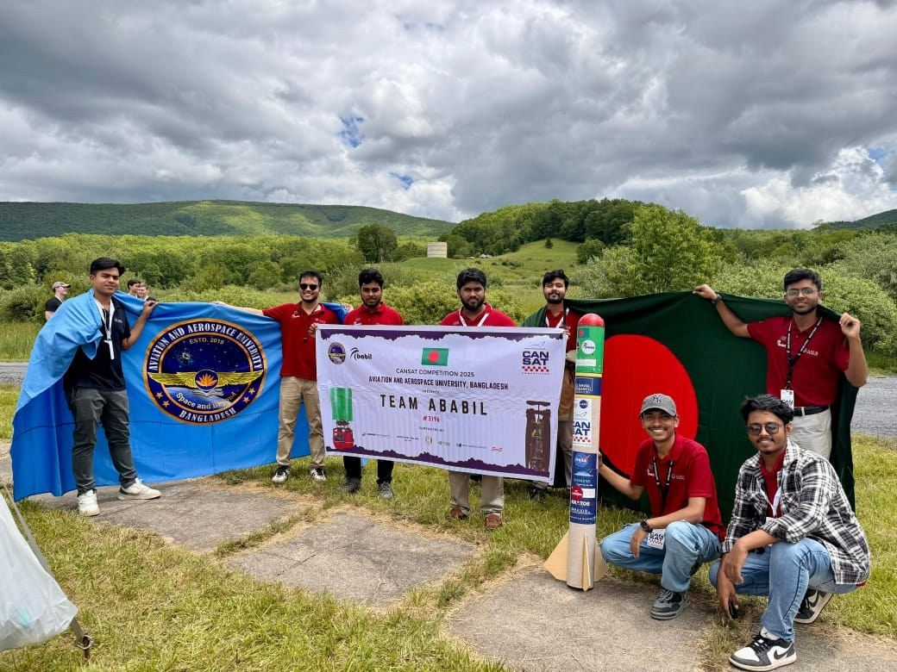
Team Ababil, AAUB — Monterey, Virginia, June 2025
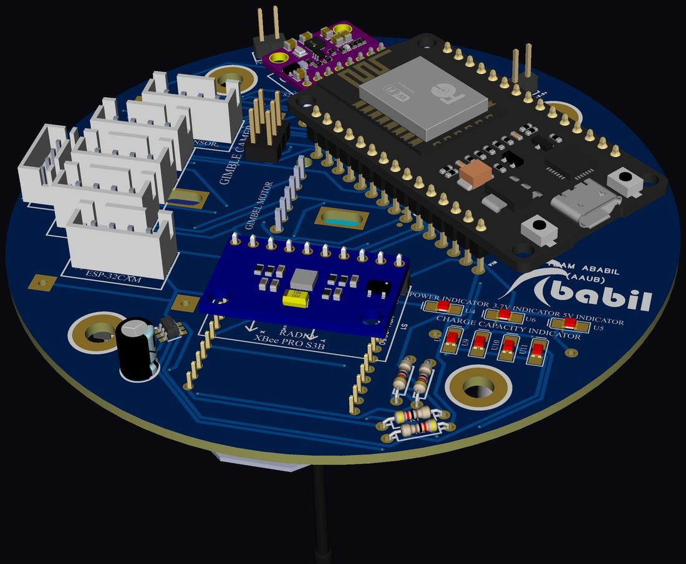
OBC top — ESP32, XBee PRO S3B radio, gimbal and camera ports
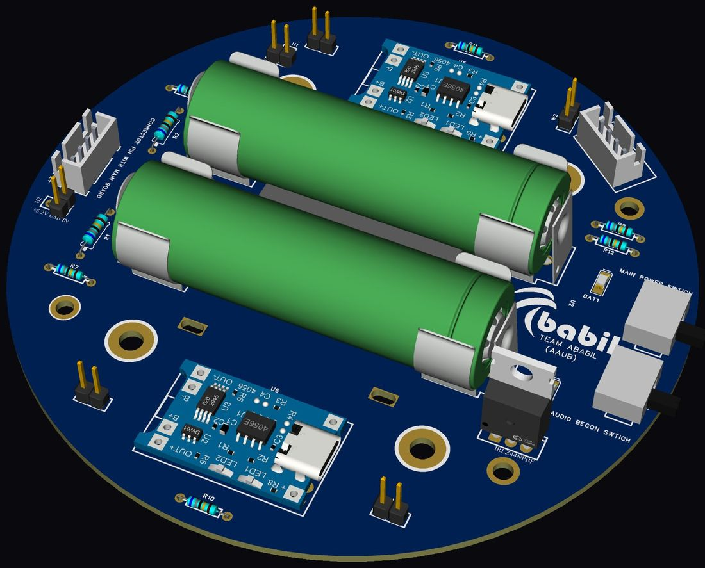
EPS — dual 18650 cells, TP4056 charging, beacon and main power switching
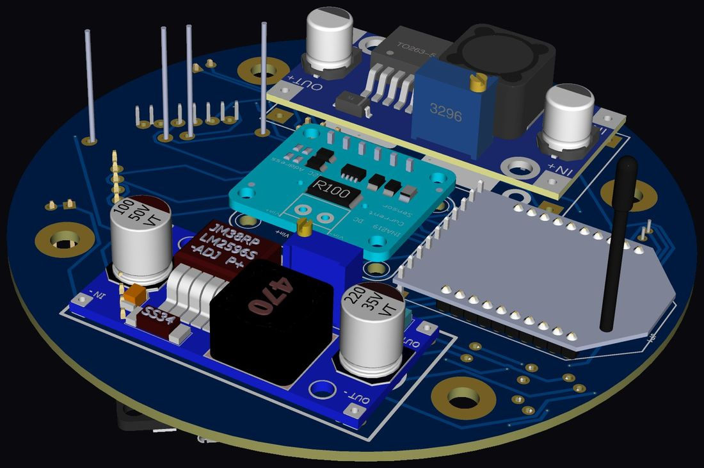
OBC underside — buck rails, INA219 current sensing, telemetry radio
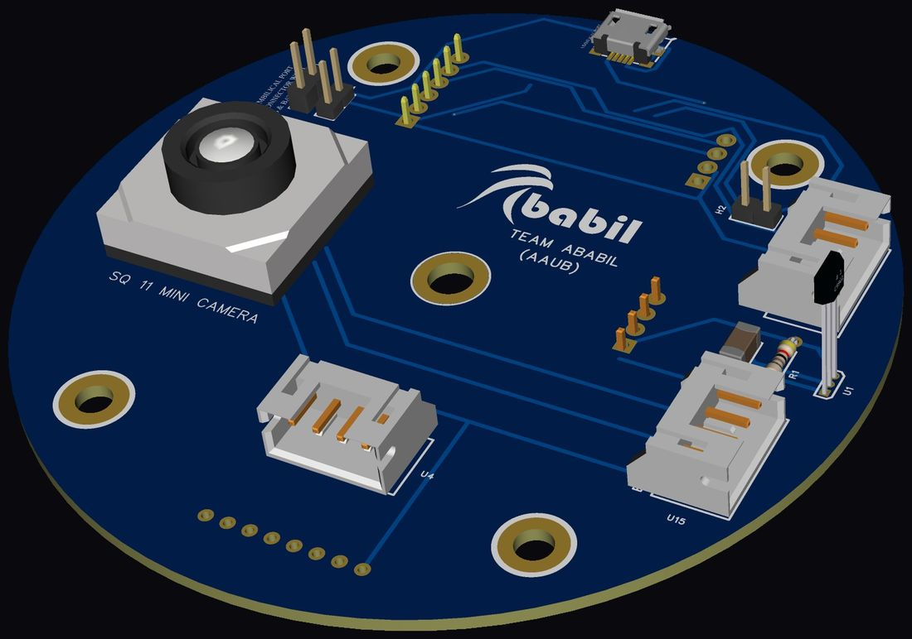
Deployable camera board — SQ11 module and umbilical port
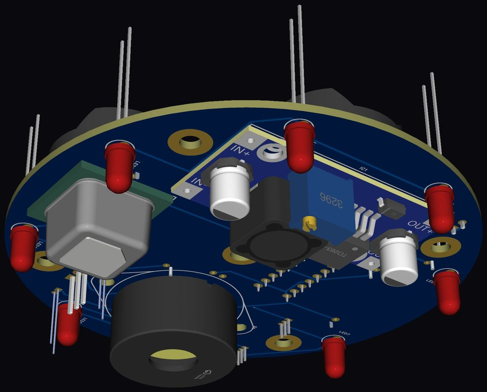
Audio beacon board — recovery buzzer and indicator ring
TECHNICAL HIGHLIGHTS
Designed all six flight boards in EasyEDA Pro — EPS, OBC (dual-sided), data storage, deployable camera and audio beacon — from schematic through layout, routing and 3D mechanical validation.
Power architecture: dual 18650 Li-ion cells with independent TP4056 charge channels, IRLZ44N switching, isolated main and beacon power domains, multi-rail buck regulation with INA219 current telemetry.
Avionics: ESP32 flight computer with XBee PRO S3B long-range telemetry, ESP32-CAM and gimbal interfaces, DS3231 RTC and microSD logging on a dedicated storage board.
Recovery systems: deployable camera board with umbilical port, plus an audio beacon board with buzzer and LED indicator ring for post-landing location.
Every board constrained to the CanSat envelope — circular form factor, stacked mounting, mass budget and launch vibration survival.
Outcome16th worldwide (89.72% overall) at the AAS International CanSat Competition, Virginia. Phase scores: PDR 98.02% · CDR 97.35% · ENV 93.75% · FRR 100% · PFR 78.79% — achieved by a first-time team building from zero. Published as a first-author IEEE paper on resilient CanSat-class power systems.
PROJECT 10
Rover-71 — Four-Board Electrical Architecture
Anatolian Rover Challenge (ARC'25), Turkey · University Rover Challenge
Role: Electrical Lead · Every PCB custom-designed · 8th globally of 27 teams
The complete electrical architecture for an indigenous Mars rover — four custom boards carrying autonomous compute, manipulator control, science instrumentation and high-current drive, built to survive Martian-analogue field conditions.
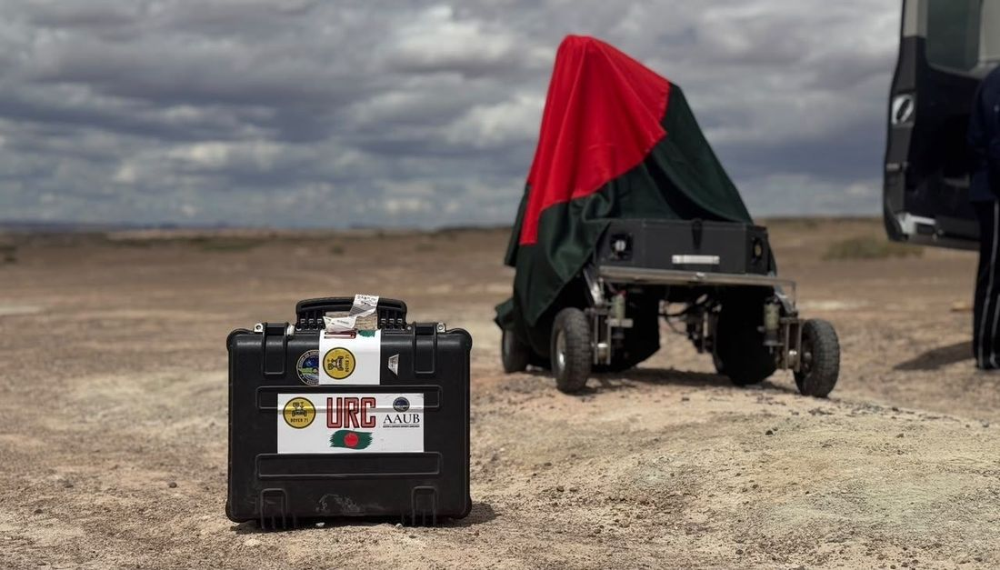
Rover-71 deployed in the field — University Rover Challenge
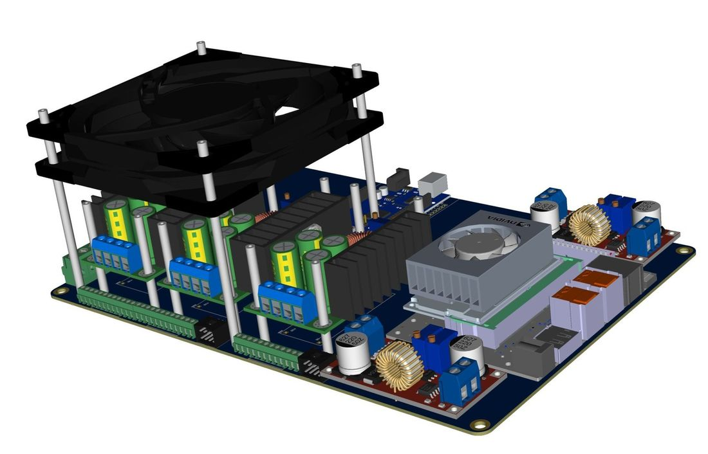
Main control board — NVIDIA Jetson Orin NX, multi-rail power and cooling
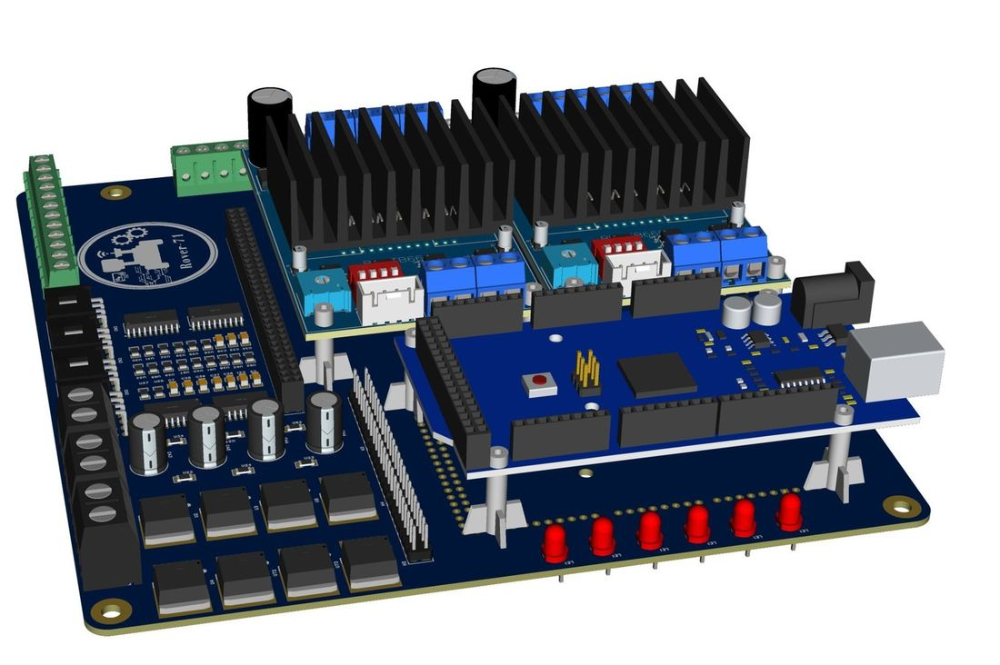
Robotic arm controller — TB6600 stepper drive stage
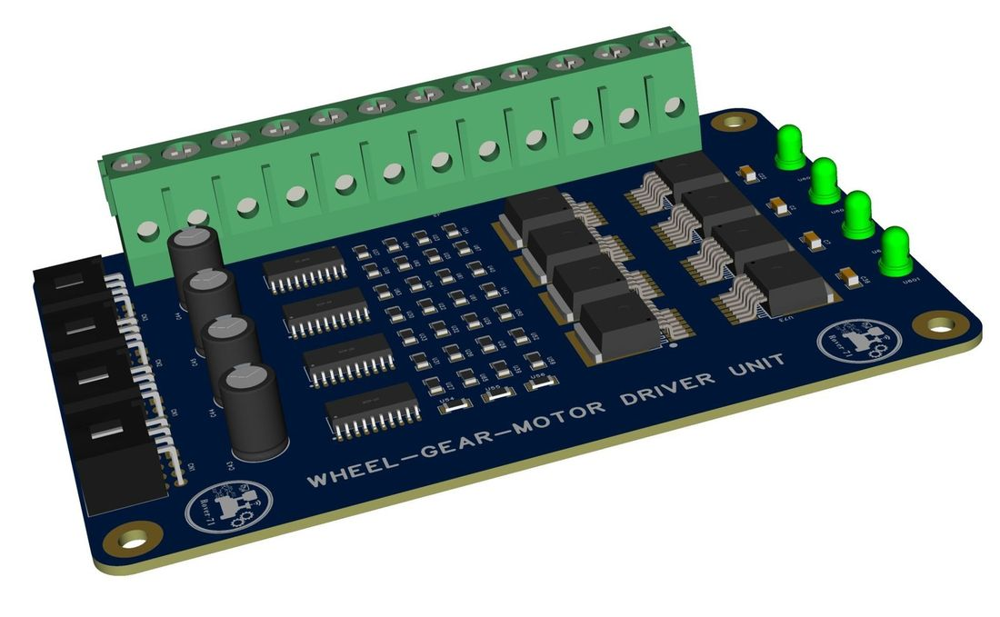
Wheel-gear motor driver unit — BTS7960 high-current stage
TECHNICAL HIGHLIGHTS
Main control board — central compute hub integrating NVIDIA Jetson Orin NX (16 GB), Raspberry Pi 4 and Arduino Mega for autonomous navigation and decision-making, with multiple independent buck rails and active thermal management.
Robotic arm controller — TB6600 stepper drive stage for precise manipulator control during sample collection and scientific operations.
Science module — dedicated board for experiment execution and real-time sensor data acquisition.
Wheel-gear motor driver unit — BTS7960 DC drive stage with opto-isolated inputs and robust high-current handling for rover mobility.
Architected for reliability, modularity and field survivability — each subsystem independently powered, protected and replaceable in the field.
Outcome8th position globally (83.83%) among 27 international teams at ARC'25, Turkey, and field-deployed at the University Rover Challenge. Co-authored an IEEE TENSYMP 2024 publication on the rover's electro-mechanical design.
PROJECT 11
CC2651R3 Wireless Sensor Node — 0.8 µA Sleep, Single AA
An ultra-low-power dual-protocol wireless sensor node running for years from a single AA cell — printed 2.4 GHz antenna, matched balun and a boost front end that runs down to 0.7 V.
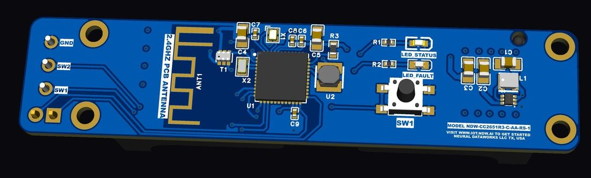
Radio side — CC2651R3, balun and printed 2.4 GHz antenna
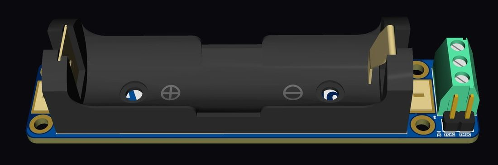
Assembled with AA holder and terminal block
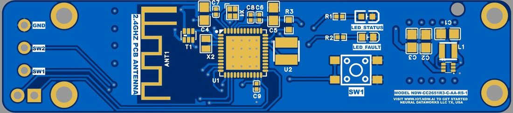
Top layer — RF section, matching network and antenna keep-out
TECHNICAL HIGHLIGHTS
TI CC2651R3 SoC (VQFN-48) running Zigbee (IEEE 802.15.4) and BLE 5.0 at 2.4 GHz, +5 dBm output.
0.8 µA sleep current — single AA cell (1.5 V) boosted to 3.3 V by a TPS610994 operating from 0.7 V, feeding the SoC's internal DC/DC to a 1.68 V core rail.
RF chain: Johanson 2450BM15A0015E balun into a printed PCB trace antenna — matched layout with controlled keep-out, no external antenna cost.
48 MHz main and 32.768 kHz sleep crystals; dry-contact reed switch input for door, window and tamper sensing.
A microwatt-class solar harvesting front end with MPPT, sodium-ion charging and an ESP32 power interface — the same photovoltaic conversion discipline as the spacecraft array, at the opposite end of the power scale.
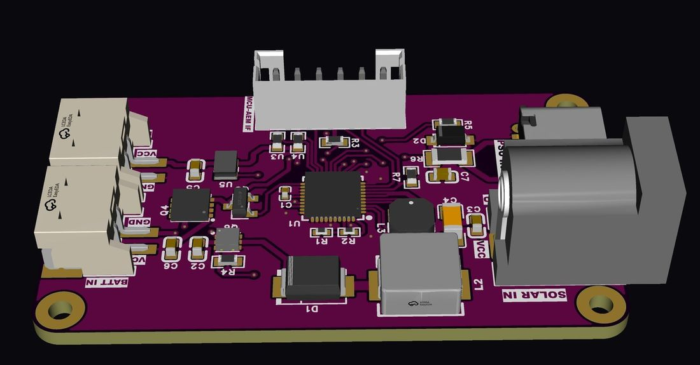
Harvesting board — solar and USB-C inputs, battery and load rails
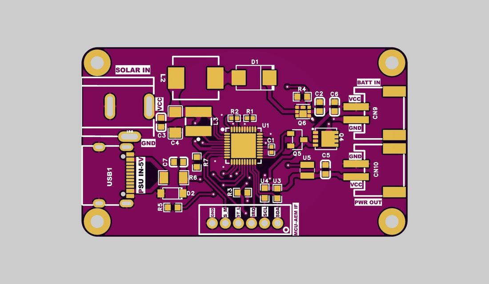
Layout — SOLAR IN, PSU IN, BATT IN and PWR OUT domains
TECHNICAL HIGHLIGHTS
e-peas AEM15820 energy-harvesting PMIC reaching 97% boost efficiency, with MPPT tuned to a Voltaic 2.5 W ETFE panel at an 85% ratio.
Sodium-ion 18650 storage (2P Hakadi, 4.1 V charge) configured over I2C — and chemistry-flexible by firmware: LiFePO4, Li-ion or LiPo can be swapped with no PCB respin.
USB-C 5 V fallback charging at 100 mA constant-current with constant-voltage termination.
Regulated 3.3 V / 100 mA rail for an ESP32 and sensors, plus a raw storage tap for high-current peripherals such as a cellular modem.
I2C telemetry and event-driven control, NTC thermal protection, and a 15 nA shipping mode for inventory storage.
Outcome Delivered with register configuration maps, an ESP32 driver library, a full application sketch, power-routing guidance, operational state definitions, troubleshooting guide and BOM.
EXPERIENCE
Track record
Executive Electrical Engineer
Palki Motors Limited — Dhaka, Bangladesh
JAN 2026 — PRESENT
Battery pack, BMS and motor-controller R&D for Bangladesh's first indigenous electric vehicle — cell balancing, state-of-charge estimation, thermal management and layered fault protection.
Freelance PCB & Embedded Hardware Engineer
International clients — incl. SOLLAB Co., Ltd. (South Korea)
2025 — PRESENT
Spacecraft solar arrays and PCDUs, MPPT charge controllers, drone power modules and flight controllers — delivered fabrication-ready with full design documentation.
PCB Design Engineer (R&D)
Robotry BD — remote, part-time
OCT 2023 — JUN 2025
Multi-layer PCBs for commercial IoT products, end to end — schematic capture through EMI/EMC-aware layout to production DFM release.
BSc in Aeronautical Engineering (Avionics)
Aviation & Aerospace University Bangladesh
2022 — 2025 · CGPA 3.41 / 4.00 · BEST THESIS AWARD
Thesis: a complete indigenous 1U space-grade CubeSat — all five subsystems designed, fabricated and validated in-house.
RESEARCH
Publications
Five peer-reviewed IEEE publications — first author on three — covering CubeSat power architecture, reliability engineering and low-power satellite communication.
01
A Framework for Resilient Power Systems in CanSat-Class Reusable Small Satellites